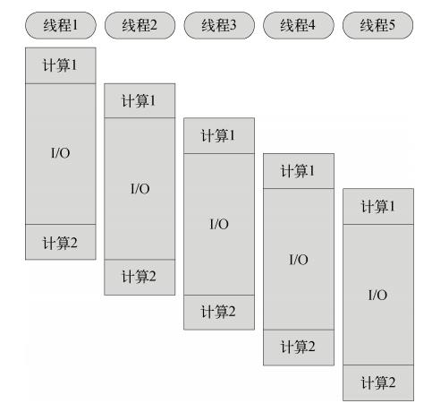
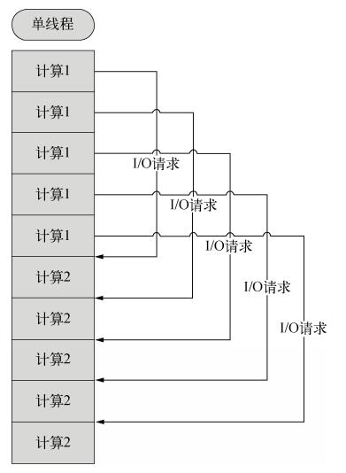
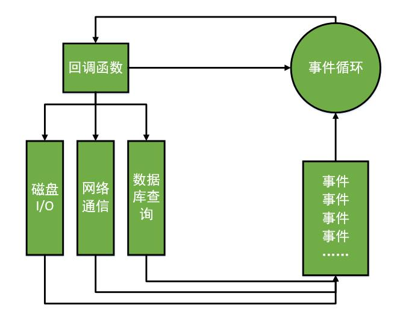
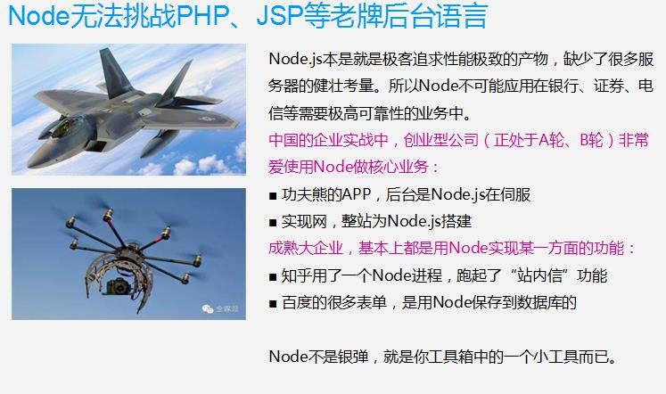

安装
直接下载/CDN引用
npm
|
|
Yarn
|
|
在一个模块打包系统中，必须显示地通过Vue.use()来安装Vuex
|
|
Vuex是一个专为Vue.js应用程序开发的状态管理模式。它采用集中式存储管理应用的所有组件的状态，并以相应的规则保证状态以一种可预测的方式发生变化。
使用例子如下：
main.js
store.js
App.vue
直接下载/CDN引用
npm
|
|
Yarn
|
|
在一个模块打包系统中，必须显示地通过Vue.use()来安装Vuex
|
|
Vuex是一个专为Vue.js应用程序开发的状态管理模式。它采用集中式存储管理应用的所有组件的状态，并以相应的规则保证状态以一种可预测的方式发生变化。
使用例子如下：
main.js
store.js
App.vue
|
|
|
|
|
|
|
|
|
|
|
|
|
|
1.1.1 MVC
Model controller view
view通过controller来和model联系，协调。view与model不直接联系，基本联系都是单向的
1.1.2 MVP
model controller/presenter view
presenter完全把view和model进行了分离，主要的逻辑都在presenter里实现
1.1.3 MVVM
model view viewModel
view的变化会自动更新到viewModel,viewModel的变化也会同步到view
特性：
任何一个盒子都可以用以下方式指定为flex布局：
如果盒子是行内元素，也可以用以下方式指定：
webkit内核的浏览器需加上-webkit前缀：
弹性布局的容器有6个属性，分别是：
flex-direction: 控制主轴的方向(即项目的排列方向)
flex-wrap: 默认情况下，项目都排在一条线（又称”轴线”）上。flex-wrap属性定义，如果一条轴线排不下，如何换行。
flex-flow: flex-flow属性是flex-direction属性和flex-wrap属性的简写形式，默认值为row nowrap。
justify-content: 定义了项目在主轴上的对齐方式。
align-items: 定义项目在交叉轴上如何对齐。
align-content: 定义了多根轴线的对齐方式。如果项目只有一根轴线，该属性不起作用。
设置到项目上的6个特性：
|
|
|
|
一、Express框架
Express框架是后台的Node框架，所以和jQuery、zepto、yui、bootstrap都不一个东西。
Express在后台的受欢迎的程度，和jQuery一样，就是企业的事实上的标准。
● 原生Node开发，会发现有很多问题。比如：
■ 呈递静态页面很不方便，需要处理每个HTTP请求，还要考虑304问题
■ 路由处理代码不直观清晰，需要写很多正则表达式和字符串函数
■ 不能集中精力写业务，要考虑很多其他的东西
我们自己可以把第一天的作业，就是那个静态文件服务给封装成为模块。封装的越多，就自己做出了类似Express的东西。
● EXPRESS的哲学是在你的想法和服务器之间充当薄薄的一层。这并不意味着他不够健壮，或者没有足够的有用特性，而是尽量少干预你，让你充分表达自己的思想，同时提供一些有用的东西。
英语官网：http://expressjs.com/
中文官网：http://www.expressjs.com.cn/
整体感知，Express框架。
安装Express框架，就是使用npm的命令。
–save参数，表示自动修改package.json文件，自动添加依赖项。
路由能力：
静态文件伺服能力：
模板引擎：
我们学习的是Express4.X，和Express3.X差别非常大。
二、路由
当用get请求访问一个网址的时候，做什么事情：
当用post访问一个网址的时候，做什么事情：
如果想处理这个网址的任何method的请求，那么写all
这里的网址，不分大小写，也就是说，你路由是
实际上小写的访问也行。
所有的GET参数，? 后面的都已经被忽略。 锚点#也被忽略
你路由到/a ， 实际/a?id=2&sex=nan 也能被处理。
正则表达式可以被使用。正则表达式中，未知部分用圆括号分组，然后可以用req.params[0]、[1]得到。
req.params类数组对象。
冒号是更推荐的写法。
适合进行 RESTful路由设计。简单说，就是一个路径，但是http method不同，对这个页面的使用也不同。
/student/345345
get 读取学生信息
add 添加学生信息
delete 删除学生新
三、中间件
如果我的的get、post回调函数中，没有next参数，那么就匹配上第一个路由，就不会往下匹配了。
如果想往下匹配的话，那么需要写next()
下面两个路由，感觉没有关系：
但是实际上冲突了，因为admin可以当做用户名 login可以当做id。
解决方法1：交换位置。 也就是说，express中所有的路由（中间件）的顺序至关重要。
匹配上第一个，就不会往下匹配了。 具体的往上写，抽象的往下写。
解决方法2：
路由get、post这些东西，就是中间件，中间件讲究顺序，匹配上第一个之后，就不会往后匹配了。next函数才能够继续往后匹配。
app.use()也是一个中间件。与get、post不同的是，他的网址不是精确匹配的。而是能够有小文件夹拓展的。
比如网址： http://127.0.0.1:3000/admin/aa/bb/cc/dd
如果写一个/
app.use()就给了我们增加一些特定功能的便利场所。
实际上app.use()的东西，基本上都从第三方能得到。
● 大多数情况下，渲染内容用res.render()，将会根据views中的模板文件进行渲染。如果不想使用views文件夹，想自己设置文件夹名字，那么app.set(“views”,”aaaa”);
● 如果想写一个快速测试页，当然可以使用res.send()。这个函数将根据内容，自动帮我们设置了Content-Type头部和200状态码。send()只能用一次，和end一样。和end不一样在哪里？能够自动设置MIME类型。
● 如果想使用不同的状态码，可以：
● 如果想使用不同的Content-Type，可以：
四、GET请求和POST请求的参数
● GET请求的参数在URL中，在原生Node中，需要使用url模块来识别参数字符串。在Express中，不需要使用url模块了。可以直接使用req.query对象。
● POST请求在express中不能直接获得，必须使用body-parser模块。使用后，将可以用req.body得到参数。但是如果表单中含有文件上传，那么还是需要使用formidable模块。
Node中全是回调函数，所以我们自己封装的函数，里面如果有异步的方法，比如I/O，那么就要用回调函数的方法封装。
错误：
正确:
一、复习
复习：
Node.js开发服务器，数据、路由。本地关心的效果，交互；
Node.js实际上是极客开发出的一个小玩具，不是银弹。有着别人不具备的怪异特点：
单线程、Non-blocking I/O、Event Driven。 实际上是一个特点。
首先，Node不为每个用户开辟一个线程，所以非常极端的选择了单线程。单线程，要照顾所有的用户，那么就必须有非阻塞I/O，否则一个人的I/O就把别人、自己都阻塞了。一旦有非阻塞I/O，一个人如果I/O去了，就会放弃CPU的使用权，换成另一个人使用CPU（或者执行此人后面的语句）。所以CPU的利用率100%。第一个人I/O结束了，就要用事件来通知线程，执行回调函数。此时必须有事件环，就有一个排队调度机制。Node中有超过半数的C++代码，在搭建事件环。
Node.js和别的老牌3P不一样：
1） 没有自己的语法，使用V8引擎，所以就是JS。V8引擎解析JS的，效率非常高，并且V8中很多东西都是异步的。Node就是将V8中的一些功能自己没有重写（别人做了，自己就站在巨人肩膀上），移植到了服务器上。
2） 没有web容器，就是安装配置完成之后，没有一个根目录。
命令提示符所在路径太重要了，因为程序中的所有相对路径”./”，都是相对这个命令提示符路径的，而不是相对于js文件自己。
系统中，80端口，就是默认http端口。所以当没有端口号的时候，就是80端口。
|
|
二、模块
● 在Node.js中，以模块为单位划分所有功能，并且提供了一个完整的模块加载机制，这时的我们可以将应用程序划分为各个不同的部分。
不可能用一个js文件去写全部的业务。肯定要有MVC。
● 狭义的说，每一个JavaScript文件都是一个模块；而多个JavaScript文件之间可以相互require，他们共同实现了一个功能，他们整体对外，又称为一个广义上的模块。
● Node.js中，一个JavaScript文件中定义的变量、函数，都只在这个文件内部有效。当需要从此JS文件外部引用这些变量、函数时，必须使用exports对象进行暴露。使用者要用require()命令引用这个JS文件。
foo.js文件中的代码：
|
|
msg这个变量，是一个js文件内部才有作用域的变量。
如果别人想用这个变量，那么就要用exports进行暴露。
使用者：
使用者用foo来接收exports对象，也就是说，这里的foo变量，就是文件中的exports变量。
● 一个JavaScript文件，可以向外exports无数个变量、函数。但是require的时候，仅仅需要require这个JS文件一次。使用的它的变量、函数的时候，用点语法即可。所以，无形之中，增加了一个顶层命名空间。
js文件中，可以用exports暴露很多东西，比如函数、变量。
在使用者中，只需要require一次。
相当于增加了顶层变量。所有的函数、变量都要从这个顶层变量走：
Node中，js文件和js文件，就是被一个个exports和require构建成为网状的。
不是靠html文件统一在一起的。
● 可以将一个JavaScript文件中，描述一个类。用
module.export = 构造函数名;
的方式向外暴露一个类。
也就是说，js文件和js文件之间有两种合作的模式：
1） 某一个js文件中，提供了函数，供别人使用。 只需要暴露函数就行了；
2） 某一个js文件，描述了一个类。
● 如果在require命令中，这么写:
那么Node.js将该文件视为node_modules目录下的一个文件
● node_modules文件夹并不一定在同级目录里面，在任何直接祖先级目录中，都可以。甚至可以放到NODE_PATH环境变量的文件夹中。这样做的好处稍后你将知道：分享项目的时候，不需要带着modules一起给别人。
● 我们可以使用文件夹来管理模块，比如
那么Node.js将会去寻找node_modules目录下的bar文件夹中的index.js去执行。
每一个模块文件夹中，推荐都写一个package.json文件，这个文件的名字不能改。node将自动读取里面的配置。有一个main项，就是入口文件：
package.json文件，要放到模块文件夹的根目录去。
我们刚才学习了，模块就是一些功能的封装，所以一些成熟的、经常使用的功能，都有人封装成为了模块。并且放到了社区中，供人免费下载。
这个伟大的社区，叫做npm。 也是一个工具名字 node package management
https://www.npmjs.com/
去社区搜索需求，然后点进去，看api。
如果要配置一个模块，那么直接在cmd使用
npm install 模块名字
就可以安装。 模块名字全球唯一。
安装的时候，要注意，命令提示符的所在位置。
1.我们的依赖包，可能在随时更新，我们永远想保持更新，或者某持某一个版本；
2.项目越来越大的时候，给别人看的时候，没有必要再次共享我们引用的第三方模块。
我们可以用package.json来管理依赖。
在cmd中，使用npm init可以初始化一个package.json文件，用回答问题的方式生成一个新的package.json文件。
使用
npm install 将能安装所有依赖。
npm也有文档，这是package.json的介绍：
https://docs.npmjs.com/files/package.json
require()别的js文件的时候，将执行那个js文件。
注意：
require()中的路径，是从当前这个js文件出发，找到别人。而fs是从命令提示符找到别人。
所以，桌面上有一个a.js， test文件夹中有b.js、c.js、1.txt
a要引用b：
b要引用c：
但是，fs等其他的模块用到路径的时候，都是相对于cmd命令光标所在位置。
所以，在b.js中想读1.txt文件，推荐用绝对路径：
三、post请求
|
|
|
|
原生写POST处理，比较复杂，要写两个监听。文件上传业务比较难写。
所以，用第三方模块。formidable。
只要涉及文件上传，那么form标签要加一个属性：
四、模板引擎
数据绑定，就成为一个完整的html字符串了。
前台的模板，我们现在要学习的是后台的模板。
后台模板，著名的有两个，第一个叫做ejs； 第二个叫做jade。
是npm第三方包。
先说EJS(Embedded JavaScript templates)
后台模板引擎
|
|
V8引擎本身就是用于Chrome浏览器的JS解释部分，但是Ryan Dahl（瑞恩达尔）这哥们，鬼才般的，把这个V8搬到了服务器上，用于做服务器的软件。
Node.js是一个专注于实现高性能Web服务器优化的专家，几经探索，几经挫折后，遇到V8而诞生的项目。
Node.js是一个让JavaScript运行在服务器端的开发平台，它让JavaScript的触角伸到了服务器端，可以与PHP、JSP、Python、Ruby平起平坐。
但Node似乎有点不同：
● Node.js不是一种独立的语言，与PHP、JSP、Python、Perl、Ruby的“既是语言，也是平台”不同，Node.js的使用JavaScript进行编程，运行在JavaScript引擎上（V8）。
● 与PHP、JSP等相比（PHP、JSP、.net都需要运行在服务器程序上，Apache、Naginx、Tomcat、IIS。
），Node.js跳过了Apache、Naginx、IIS等HTTP服务器，它自己不用建设在任何服务器软件之上。Node.js的许多设计理念与经典架构（LAMP = Linux + Apache + MySQL + PHP）有着很大的不同，可以提供强大的伸缩能力。一会儿我们就将看到，Node.js没有web容器。
Node.js自身哲学，是花最小的硬件成本，追求更高的并发，更高的处理性能。
官网：https://nodejs.org/en/
特点：Node.js uses an event-driven, non-blocking I/O model that makes it lightweight and efficient.
所谓的特点，就是Node.js是如何解决服务器高性能瓶颈问题的。
单线程
在Java、PHP或者.net等服务器端语言中，会为每一个客户端连接创建一个新的线程。而每个线程需要耗费大约2MB内存。也就是说，理论上，一个8GB内存的服务器可以同时连接的最大用户数为4000个左右。要让Web应用程序支持更多的用户，就需要增加服务器的数量，而Web应用程序的硬件成本当然就上升了。
Node.js不为每个客户连接创建一个新的线程，而仅仅使用一个线程。当有用户连接了，就触发一个内部事件，通过非阻塞I/O、事件驱动机制，让Node.js程序宏观上也是并行的。使用Node.js，一个8GB内存的服务器，可以同时处理超过4万用户的连接。
另外，带线程的带来的好处，还有操作系统完全不再有线程创建、销毁的时间开销。
坏处，就是一个用户造成了线程的崩溃，整个服务都崩溃了，其他人也崩溃了。
 
多线程、单线程的一个对比。
也就是说，单线程也能造成宏观上的“并发”。
非阻塞I/O non-blocking I/O
例如，当在访问数据库取得数据的时候，需要一段时间。在传统的单线程处理机制中，在执行了访问数据库代码之后，整个线程都将暂停下来，等待数据库返回结果，才能执行后面的代码。也就是说，I/O阻塞了代码的执行，极大地降低了程序的执行效率。
由于Node.js中采用了非阻塞型I/O机制，因此在执行了访问数据库的代码之后，将立即转而执行其后面的代码，把数据库返回结果的处理代码放在回调函数中，从而提高了程序的执行效率。
当某个I/O执行完毕时，将以事件的形式通知执行I/O操作的线程，线程执行这个事件的回调函数。为了处理异步I/O，线程必须有事件循环，不断的检查有没有未处理的事件，依次予以处理。
阻塞模式下，一个线程只能处理一项任务，要想提高吞吐量必须通过多线程。而非阻塞模式下，一个线程永远在执行计算操作，这个线程的CPU核心利用率永远是100%。所以，这是一种特别有哲理的解决方案：与其人多，但是好多人闲着；还不如一个人玩命，往死里干活儿。
事件驱动event-driven
在Node中，客户端请求建立连接，提交数据等行为，会触发相应的事件。在Node中，在一个时刻，只能执行一个事件回调函数，但是在执行一个事件回调函数的中途，可以转而处理其他事件（比如，又有新用户连接了），然后返回继续执行原事件的回调函数，这种处理机制，称为“事件环”机制。
Node.js底层是C++（V8也是C++写的）。底层代码中，近半数都用于事件队列、回调函数队列的构建。用事件驱动来完成服务器的任务调度，这是鬼才才能想到的。针尖上的舞蹈，用一个线程，担负起了处理非常多的任务的使命。

单线程，单线程的好处，减少了内存开销，操作系统的内存换页。
如果某一个事情，进入了，但是被I/O阻塞了，所以这个线程就阻塞了。
非阻塞I/O， 不会傻等I/O语句结束，而会执行后面的语句。
非阻塞就能解决问题了么？比如执行着小红的业务，执行过程中，小刚的I/O回调完成了，此时怎么办？？
事件机制，事件环，不管是新用户的请求，还是老用户的I/O完成，都将以事件方式加入事件环，等待调度。
说是三个特点，实际上是一个特点，离开谁都不行，都玩儿不转了。
Node.js很像抠门的餐厅老板，只聘请1个服务员，服务很多人。结果，比很多服务员效率还高。
Node.js中所有的I/O都是异步的，回调函数，套回调函数。
Node.js适合用来开发什么样的应用程序呢？
善于I/O，不善于计算。因为Node.js最擅长的就是任务调度，如果你的业务有很多的CPU计算，实际上也相当于这个计算阻塞了这个单线程，就不适合Node开发。
当应用程序需要处理大量并发的I/O，而在向客户端发出响应之前，应用程序内部并不需要进行非常复杂的处理的时候，Node.js非常适合。Node.js也非常适合与web socket配合，开发长连接的实时交互应用程序。
比如：
● 用户表单收集
● 考试系统
● 聊天室
● 图文直播
● 提供JSON的API（为前台Angular使用）

|
|
xhr2在结合H5的其他特性，可以实现上述flash上传的所以功能外，还可以实现拖拽上传功能。
由于诸多HTML5特性（Blob ,xhr2,FileReader,ArrayBuffer等）在IE10+中才有效，
所以xhr2上传更适合在chrome，firefox等高版本的浏览器或和移动端使用。
|
|
使用jquery:
|
|
|
|
可参考：
https://developer.mozilla.org/zh-CN/docs/Web/Guide/Using_FormData_Objects
https://developer.mozilla.org/zh-CN/docs/Web/Guide/Using_FormData_Objects
什么是REM?
在rem之前，我们知道em是相对于父元素的字体来设置字体大小的，这样就会存在一个问题，进行任何元素设置，都有可能需要知道他父元素的大小，在我们多次使用时，就会带来无法预知的错误风险。而rem是相对于根元素，这样就意味着，我们只需要在根元素确定一个参考值，，在根元素中设置多大的字体，这完全可以根据您自己的所需。
浏览器的兼容性？
虽然rem是CSS3新引进来的一个度量单位，但是它支持的浏览器还是挺多的，比如：Mozilla Firefox 3.6+、Apple Safari 5+、Google Chrome、IE9+和Opera11+。只是可怜的IE6-8无法，你们就把他们当透明了吧，我向来都是如此。
不过使用单位设置字体，可不能完全不考虑IE了，如果你想使用这个REM，但也想兼容IE下的效果，可你可考虑“px”和“rem”一起使用，用”px”来实现IE6-8下的效果，然后使用“Rem”来实现代浏览器的效果，就让IE6-8不能随文字的改变而改变吧，现在基本要抛弃这些古老的浏览器了。
首先我们来看看使用 rem 实现手机屏幕适配的常用方案。
以设计稿的宽度为640px，即：designWidth = 640，同时设定在640px屏宽下 1rem=100px ，即：rem2px = 100。
设置 1rem=100px 的优点不言而喻。前端开发者在切图、重构页面的时候，通过直接位移小数点的方式，就可以将UI图中测量到的 px 值换算成对应的 rem 值，方便快捷。
此外，在 head 中我们还设置了：
|
|
先来看看具体方案
方案1：
|
|
方案2：
|
|
方案3：
|
|
注：目标屏幕宽度和设计稿的宽度的比:
|
|
方案4：
|
|
注：由于浏览器默认字体大小为 16px，所以当我们使用百分比作为根节点 html 的字体大小时，即html元素的font-size值设置为一个百分比值，rem 的计算方式就会改为：
|
|
同样的可以得到所有屏幕大小下，html 的 font-size 值的计算公式，即为方案4：
|
|
方案5：
|
|